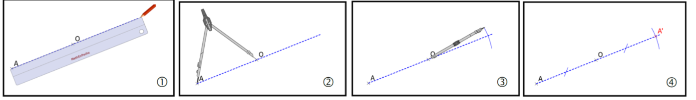
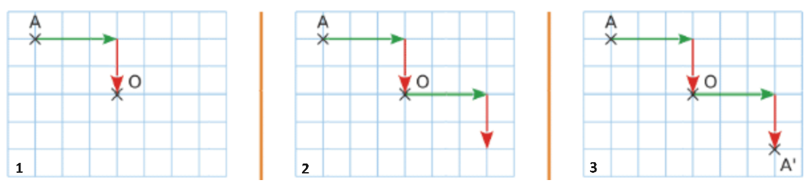
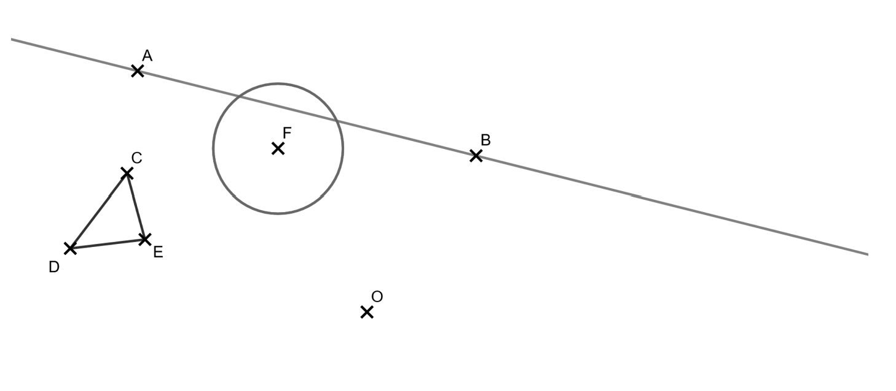
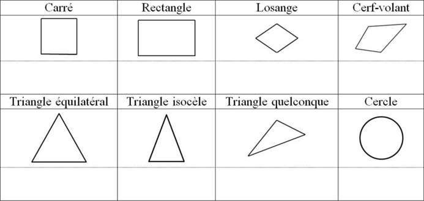

Symétrie centrale
Symétrique d'un point
Définition : Deux points A et A' sont symétriques par rapport à un point O, lorsque O est le milieu du segment [AA']. O est alors le centre de symétrie de A et A'.
Sur feuille blanche
Pour construire le symétrique A' d'un point A par rapport à un point O, il faut :

- À la règle, on trace la demi-droite [A0) (d'origine A et passant par O).
- Au compas, on prend pour écartement la distance AO.
- On reporte cet écartement sur la demi-droite de l'autre côté de O.
- On marque le point A' et on code l'égalité de longueur.
Dans un quadrillage
Pour construire le symétrique A' d'un point A par rapport à un point O, il faut :

- On regarde le déplacement pour aller de A vers O (ici 3 carreaux vers la droite et deux vers le bas).
- On reproduit ce déplacement à partir du point O.
- On marque le point A'.
Symétrique d'une figure
Pour construire le symétrique d'une figure par rapport à un point, il suffit de construire les symétriques des points clés puis de les relier correctement en suivant la figure de départ.

Propriétés de la symétrie centrale
Par une symétrie centrale :
- Le symétrique d'un segment est un segment de même longueur.
- Le symétrique d'un cercle est un cercle de même rayon. Les centres de ces 2 cercles sont symétriques l'un de l'autre.
- Le symétrique d'un angle est un angle de même mesure.
- Le symétrique d'une droite est une droite parallèle.
- Les périmètres et les aires sont conservés.
Centre de symétrie et axes de symétrie de figures usuelles
Définition : Dire qu'un point est un centre de symétrie d'une figure signifie que la figure et son symétrique par rapport à ce point sont confondus.
